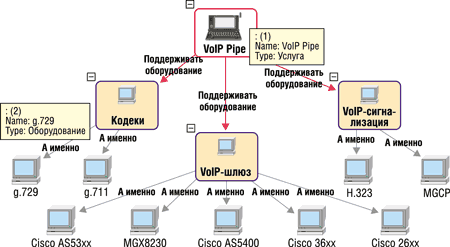

Виктор Клинцов, Григорий Дробязко,
компания "Авикомп Сервисез"
grig@avicomp.ru
Современные средства обработки текстов обычно ограничиваются задачами поиска по ключевым словам (с учетом морфологии, семантики и т. п.). Реже используются механизмы рубрикации и аннотирования. Мы рассмотрим здесь качественно иной метод: преобразование неструктурированной информации в структурированную с целью формализовать область поисковых интересов пользователя и затем использовать ее при поиске и классификации документов.
Текст как источник знаний
По утверждениям специалистов, до 80% информации хранится в текстовых документах в неструктурированном виде. В настоящее время многие текстовые документы существуют в различных электронных форматах - электронной почты, страниц Интернета или архивов документарных баз организаций.
Под управлением знаниями мы будем понимать актуальные задачи сбора, организации информации и доступа к информационным ресурсам предприятия, а также извлечение из массивов первичной информации некоторых вторичных данных, необходимых для решения конкретных задач.
Мы исходим из того, что знания о "чем-то" хранятся в электронных документах. Электронные документы (в нашей интерпретации - информационные контейнеры) содержат описания ситуаций, проблем, состояний проекта, продуктов и т. п. Для примера рассмотрим текстовый фрагмент, взятый со страницы сайта телекоммуникационной компании РТКОММ (http://www.rtcomm.ru/services/voice). Этот фрагмент содержит сведения из домена "Типы оборудования для передачи речевой информации":
"VoIP Pipe - предоставление услуг по передаче речевой информации в режиме реального времени по технологии, позволяющей использовать MPLS-сеть РТКОММ в качестве транспортной среды для передачи голосовых сообщений с использованием протокола TCP/IP для операторов связи, обладающих лицензией на предоставление услуги телематических служб передачи речевой информации...
|
||||||||
Ситуацию, описанную в этом фрагменте, можно отобразить на диаграмме. Так, на рис. 1 показаны объекты типа "Оборудование", входящие в перечень клиентского оборудования для предоставления услуги передачи речевой информации по технологии VoIP Pipe.
|  |
| Рис. 1. Пример описания типов оборудования для VoIP.
|
Очевидно, что визуализация подобных описаний в виде специальных диаграмм, или "карт знаний", состоящих из объектов (персон, организаций, продуктов и т. п.) и связей (взаимоотношений) между ними, позволяет вникнуть в проблему, не читая текст, а вместо этого анализируя своеобразную графическую аннотацию (ведь картинка информативнее тысячи слов!). Кроме того, при таком подходе пользователь может работать с внутренним смыслом ситуации, мыслить в привычных для него категориях, в терминах объектов и их отношений.
Следующее достоинство такой формализации - возможность неоднократного повторного использования определений объектов "карты знаний" для формирования поисковых запросов. Найденные в результате выполнения запроса документы, содержащие информацию об объектах "карты", "привязываются" к этим объектам, так что пользователям не обязательно помнить, где (на каком физическом устройстве, в какой папке) хранятся файлы, содержащие искомые объекты.
Условие запроса можно формировать не с помощью традиционного набора выражения из поисковых слов, а визуально, используя наглядное изображение фактов и выбирая из карты нужные объекты и связи между ними. Поэтому число запросов, которые возможно сформировать в этом случае, определяется числом комбинаций отобранных на карте объектов. К примеру, количество комбинаций по n = 2, 3, 4 объекта на карте, состоящей из 10 объектов, равно 375. Конечно, реально, "по смыслу" карты, составленных запросов может быть не так много, но время на составление одного запроса все равно будет радикально меньше, чем в случае набора с использованием запросного поля (число орфографических ошибок и опечаток соответственно тоже уменьшится).
Каждая такая комбинация представляет собой определенный "разрез" источников документов, а при формировании запроса создается своего рода динамическая объектная фасетная классификация , которая характеризует релевантный документ с многих сторон, причем каждое основание выбирается самим пользователем "на лету". Поэтому можно говорить о релевантности найденных и "привязанных" документов всей "карте" или конкретному набору объектов на ней.
* Фасетная классификация - совокупность нескольких независимых классификаций, осуществляемых одновременно по различным основаниям. - Прим. авт.
Найденные в результате запросов документы могут содержать новые факты, которые дополняют уже существующее понимание описанной проблемы. Так, в результате формирования и выполнения запроса по объектам "VoIP", "H.323", "G.711", "G.729", "AS5*" получим, в числе прочих, ссылку http://www.mera-voip.com/ru/voip/mvcs-specif.php на страницу компании Mera Networks. Ее продукт Mera VoIP Centrex Softswitch (Mera Centrex) обеспечивает подключение корпоративных клиентов к VoIP-сети провайдера, значит, компанию Mera Networks можно рассматривать в качестве потенциального партнера. Карта примера после добавления новых объектов приведена на рис. 2.
| Рис. 2. Развитие карты домена знаний.
|
Аналогичным образом можно искать не только потенциальных партнеров, но и, например, потенциальных конкурентов.
Продукты Ontos Series
Именно описанный выше подход положен швейцарской компанией Ontos AG (http://www.ontos.ch) в основу продуктов для управления знаниями - Ontos Series. Компания, основанная в 2001 г. в Швейцарии, в своей работе использует запатентованный метод компьютерного анализа текстов и визуализации данных. В начале 2003 г. между российской компанией "Авикомп Сервисез" (http://www.avicomp.ru) и Ontos AG было подписано партнерское соглашение, в соответствии с которым "Авикомп Сервисез" будет заниматься разработкой ряда продуктов Ontos. Кроме того, "Авикомп Сервисез" становится дистрибьютором продуктов Ontos Series, созданных совместно с компанией Ontos, на российском рынке.
Технология аналитической обработки текстов Ontos легла в основу целого семейства аналитических систем, и в настоящее время в рамках Ontos Series развиваются следующие группы продуктов.
OntosMiner - продукт для анализа текстовых документов на естественном языке, выделяющий объекты и отношения между ними из текста. Он активно используется другими продуктами Ontos Series. OntosMiner основан на технологии обработки естественного языка Natural Language Processing, которая реализована в мощной инструментальной среде GATE (General Architecture for Text Engineering), созданной в Шеффилдском университете в Великобритании.
Информационно-аналитические продукты. Продукты этой группы предназначены для сбора информации из разнородных источников и ее последующего анализа с выявлением зависимостей между объектами, принадлежащими этим источникам. Структура внутреннего хранилища данных системы - Knowledge Warehouse - строится на основе объектов и отношений. Использование технологии хранилища позволяет представлять данные в виде многомерного куба для анализа с различных точек зрения. Хранилище может пополняться как с применением подсистемы подключения к разнородным внешним базам данных, так и с помощью OntosMiner.
Информационно-поисковые продукты. В отличие от продуктов второй группы их основная задача - эффективный поиск и классификация информации и документов-первоисточников, поэтому они не имеют собственного блока аналитической обработки результатов поиска. Такой подход был назван "легким решением", и соответственно, в название этих продуктов введено обозначение Light.
Ниже мы рассмотрим продукты, относящиеся именно к третьей группе.
LightOntos - управление информацией и поиском документов
Система LightOntos создавалась с целью предоставить пользователю средства "структуризации неструктурированного", эффективного поиска информации, находящейся в хранилищах текстовых документов, накопления, представления и использования знаний. LightOntos существует в нескольких версиях, различающихся по функциональности.
"Персональный" LightOntos
LightOntos Personal Edition (PE) призван решить проблему структуризации и поиска документов с нужной информацией на персональном компьютере. Он позволяет быстро искать текстовые документы, хранящиеся в файловой системе компьютера, и классифицировать их по объектам, включенным в поисковый запрос. Дополнительная важная возможность - быстрый доступ к хранилищу документов почтового клиента, прежде всего Microsoft Outlook (2000, XP, 2003). Быстрый доступ предоставляется ко всем типам записей Outlook: сообщениям, присоединенным файлам, контактам, календарю, задачам и т. д. Для последних версий Microsoft Office 2003 поддерживается работа с записями формата Business Contact Manager.
Управление знаниями в понимании LightOntos заключается в создании архива карт знаний о ситуациях и связывании документов-первоисточников, описывающих фрагменты ситуации, с объектами карты. Карты "рисуются" вручную, без помощи OntosMiner. Кроме того, система позволяет вести архив наиболее существенных и интересных фрагментов текстовых документов, связывая их с объектами карты.
Еще один элемент карты - ссылки на информационные ресурсы пользователя (указатели на важную информацию). Подобные "закладки" могут указывать на отдельные документы или папки файловой системы, страницы Интернет-сайтов, папки Microsoft Outlook, закладки в "Избранном" Internet Explorer. Размещенные на карте, они имеют привычные для пользователя иконки и вид.
После поиска документов по выбранным объектам карты LightOntos позволяет проанализировать, какие из объектов одновременно содержатся в найденных файлах.
Карту с "привязанными" файлами и текстовыми фрагментами можно отправить по почте другому пользователю LightOntos. Благодаря этому он затратит гораздо меньше времени на вникание в проблему и получит необходимый набор исходных документов с указанием, в каких из них содержится информация об объектах карты.
Для быстрого поиска нужных документов LightOntos использует индексный сервис персонального компьютера, предоставляемый ОС Microsoft Windows NT/2000/XP. Индексный сервис получает доступ к тексту документов посредством специальных фильтров, которые "понимают" формат обрабатываемых файлов и реализуют так называемый IFilter - интерфейс, обеспечивающий извлечение текста и реквизитов документов. Windows 2000 и XP поддерживают такие фильтры для файлов Microsoft Office, HTML-файлов, сообщений Multipurpose Internet Mail Extension (MIME) и неформатированного текста.
В настоящее время существует множество фильтров для таких распространенных форматов, как Adobe Acrobat (PDF), архивные файлы ZIP и RAR, MicroStation (DGN и CEL), StarOffice и OpenOffice, файлов изображений GIF, JPEG, PNG, TIFF, PS, EPS, PSD, AI и SVG, файлов XML, Microsoft Visio (VSD, VSS, VST, VDX, VSX, VTX), Microsoft Project (MPP), Macromedia Flash, AutoCAD (DWG), MPEG, Audio Layer 3 (MP3).
Для индексации и доступа к записям почтового клиента Ontos создал свой MAPI IFilter, который, как и любые другие фильтры, может использоваться отдельно от LightOntos, обеспечивая поиск по ключевым словам в оболочке Windows Explorer.
LightOntos Business Edition
Сегодня мало кто из пользователей персонального компьютера обходится без возможностей Интернета; к тому же корпоративные компьютеры обычно подключены к локальной вычислительной сети организации, на серверах которой может храниться большое количество интересующей пользователя информации. Поэтому следующим шагом в развитии LightOntos стало расширение доступного информационного пространства за счет информации, находящейся на серверах локальной сети и в Интернете.
Для достижения этой цели Ontos использует продукт Microsoft SharePoint Portal Server. В результате объединения LightOntos и SharePoint появилась версия LightOntos Business Edition (BE) (другое название - Ontos 1-2-3), ориентированная на использование возможностей этого сервера. LightOntos BE унаследовала визуальный интерфейс и функции предыдущей версии, но в то же время ее функциональность расширена за счет возможностей SharePoint, позволяющих разделять общий информационный пул между группами пользователей, вести поиск в источниках данных и категориях документов, уведомлять пользователя о новых или измененных документах. Для SharePoint Portal Server индексируемыми источниками служат документы на внутренних и внешних Web-сайтах, в файловой системе локальной сети, в Microsoft Exchange Server, на компьютерах с SharePoint Portal Server, в базах документов Lotus Notes.
Помимо SharePoint Portal Server информационное пространство LightOntos BE расширяется за счет обращения к индексам метапоисковых серверов Интернета, например, Google. В связи с тем, что количество информационных источников в этом случае многократно возрастает, новая версия предлагает средства единообразного управления любыми типами таких источников.
В LightOntos BE имеется возможность создания специальных объектов типа "Запрос" из объектов карты. В этом случае запросы формируются по "сложному" условию поиска на основе определений групп объектов и связей, соединенных логическими операторами И, ИЛИ, НЕ.
Помимо прочего, использование SharePoint позволяет организовать архивы карт знаний рабочей группы на едином сервере и обеспечивает разграничение доступа к ним в зависимости от полномочий пользователя.
В отличие от предыдущей версии LightOntos BE имеет возможность передачи текстовых фрагментов на сервер OntosMiner, который возвращает распознанные в них объекты и отношения. Текстовый фрагмент размечается тегами этих объектов и отношений. Все размеченные объекты или часть их можно переместить операцией drag-n-drop на панель "карты знаний" для ее расширения.
Для быстрого распространения полученных знаний LightOntos BE может создавать страницы HTML-документов для публикации на Web-сервере. Эти страницы содержат карту знаний, ссылки на Web-документы и текстовые фрагменты, связанные с объектами карты.
LightOntos для рабочей группы
Существенный недостаток двух первых рассмотренных версий - отсутствие единой базы знаний. Каждый пользователь вынужден держать свой собственный набор файлов, хранящих типы объектов, объекты, карты знаний, текстовые фрагменты и ссылки на релевантные файлы. Этот недостаток особенно очевиден при групповой работе пользователей над единой тематикой.
Версия LightOntos for Workgroups как раз и призвана управлять знаниями не только отдельного пользователя, но и рабочей группы. Она имеет единый репозиторий знаний, основанный на реляционной системе управления базами данных. В качестве СУБД предлагается прежде всего Microsoft SQL Server, однако продукт рассчитан и на другие популярные СУБД, в том числе Oracle и DB2. Подсистема безопасности разграничивает доступ пользователей с разными полномочиями к объектам репозитория знаний.
В версии для рабочей группы расширяется перечень программных систем, которые могут предоставить сервис управления источниками данных, аналогичный Microsoft SharePoint Portal Server.
Еще одна особенность системы - возможность поиска объектов или ситуаций (несколько объектов, соединенных отношениями) не только в источниках текстовых данных, но и в самом репозитории знаний LightOntos.
Архитектура LightOntos
Архитектура LightOntos for Workgroups показана на рис. 3.
| Рис. 3. Архитектура LightOntos for Workgroups.
|
Выше речь шла об объектах как способе организации репозитория знаний. LightOntos оперирует объектами, которые являют собой абстракции реальных объектов окружающего мира. Кроме абстракции, поддерживается типизация объектов и отношений, между определенными типами объектов допустимы только определенные типы отношений. Объекты LightOntos обладают атрибутами, определяемыми в типе объекта, которые представляют собой статические свойства объектов. Существует установленный перечень именованных операций, применимых к объектам и их атрибутам, которые можно рассматривать как динамические свойства объекта. Например, объекты можно создавать, помещать на карту, удалять с карты, удалять из базы знаний, создавать копии, объединять несколько однотипных объектов в один. К атрибутам этих объектов применимы операции создания, изменения, удаления и извлечения атрибутов для просмотра. Ранние версии LightOntos (PE и BE) не поддерживают наследования, поэтому нельзя создать новый тип объекта путем наследования атрибутов супертипов. Однако, начиная с версии Workgroups, наследование атрибутов поддерживается.
Продукты LightOntos демонстрируют приверженность платформе и продуктам компании Microsoft. Это проявляется прежде всего в том, что в качестве платформы разработки продуктов используется Microsoft .NET, а также в тесной интеграции с Microsoft Outlook, в ориентации на использование Microsoft SQL Server в качестве основной СУБД, в использовании возможностей Microsoft SharePoint Portal Server и Indexing Service.
LightOntos работает в среде Microsoft Windows 2000/XP и Microsoft .NET Framework, требует браузера Microsoft Internet Explorer версии 5.1 и выше. Установленная программа занимает на жестком диске 130 Mбайт, для ее работы необходим объем ОЗУ от 128 Мбайт.
Сферы применения LightOntos
Одна из наиболее очевидных областей применения LightOntos - конкурентная разведка. Для успешного становления и развития бизнеса необходимо получить исчерпывающую информацию о компаниях-конкурентах, о конкурентном товаре или услугах, о новинках на рынке, о рынках сбыта. Важно также иметь ясное представление о потенциальных и действующих партнерах, дилерах, поставщиках для снижения риска работы с ними. При сборе информации основным открытым источником служит Интернет. Очень много информации можно получить на корпоративных сайтах компаний, из новостных лент и архивов федеральных и региональных СМИ.
Кроме того, LightOntos может применяться как "информационное сито" для выявления признаков возможных угроз для общества или отдельного предприятия. Такими угрозами могут быть финансовые хищения, мошеннические операции и аферы с имуществом, товарами, недвижимостью, экономические преступления, диверсионные акты, факты коррупции, недобросовестная конкуренция, действия криминальных структур.
Общая схема использования предполагает включение LightOntos в контур обработки информации совместно с одной из транзакционных или аналитических систем обработки структурированной информации. В этом контуре на долю OLTP/OLAP-системы приходится 20% информации, а на долю LightOntos - остальные 80%. При этом LightOntos получает из систем обработки структурированной информации справочники объектов и, основываясь на них, проводит поиск экземпляров объектов в массиве неструктурированной информации.
| Рис. 4. Контур обработки информации с применением LightOntos.
|
Итак, в общем смысле, продукты LightOntos относятся к классу информационно-поисковых систем и с успехом могут применяться для поддержки принятия решений при сборе информации относительно некоторой области наблюдения, систематическом поиске информации по конкретным проблемам.